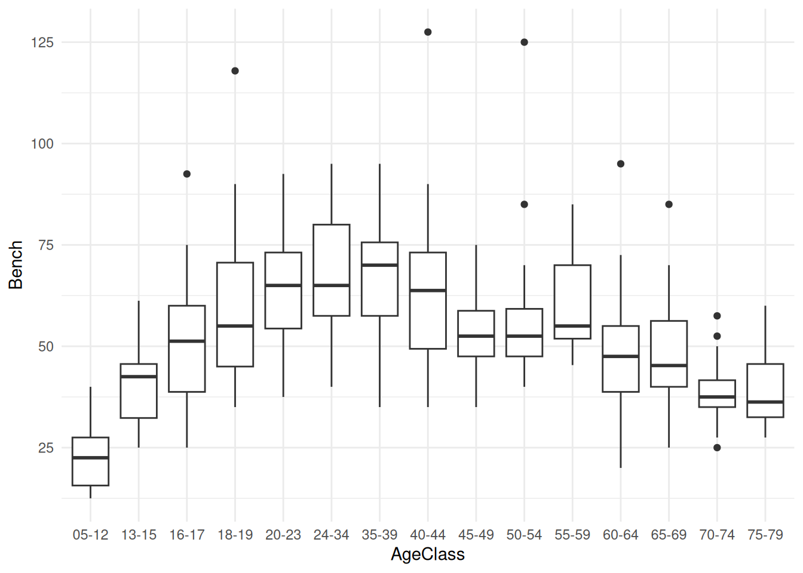

library(tidyverse)
library(readr)
library(ggplot2)
## download data from above before loading
openpl_male <- read_csv("openpl_male.csv")
openpl_female <- read_csv("openpl_female.csv")Female Powerlifting: Performing Kruskal-Wallis and Dunn’s Test Analyses Across Age Groups
non-parametric analysis
Kruskal-Wallis Test
post-hoc Dunn's Test
This module explores results from powerlifting competitions, comparing ranks between age groups.

Welcome Video
For those interested in how some events in powerlifting competitions look, please check out this video from Powerlifting America Open Nationals from @A7Intl.
Introduction
In powerlifting competitions, athletes compete in three compound events to lift as much weight as possible. Bench press is done with athletes laying flat on their back and lowering the bar to their chest and lifting back up, targeting upper body (specifically chest, triceps, and shoulders). Deadlifts are a full body lift in which athletes lift a bar from the ground to hip level (targets glutes, hamstrings, and back). Squats are done with a barbell on their back, just below the shoulders, and hinging until the hips are lower than the top of the knee (targeting quads, glutes, hamstrings, and core).
This module analyzes results from powerlifting competitions. Results are found at OpenPowerlifting, a project aimed at collecting powerlifting data over time. Performances are ranked by how much weight is lifted and athletes are sorted into age classes. You will compare the rankings achieved by athletes across age classes and distinguish any differences between classes.
Data
The initial data set from OpenPowerlifting Dataset contains over 3,000,000 rows of individuals and 42 columns of variables. We will be using a separate female and male data set taken from the larger set, each containing 300 individual observations and 15 variables. These have been condensed for this module from a female data set and male data set from SCORE Sports Data Repository. Each row represents a powerlifting athlete and variables including their demographics and how much weight they lifted (in kilograms).
For the convenience of this module, the data has been further cleaned and can be downloaded here.
Download wrangled and cleaned data:
Male athletes: openpl_male.csv
Female athletes: openpl_female.csv
Data Source
Adapted from OpenPowerlifting and SCORE Sports Data Repository
Descriptions of Relevant Variables
| Variable | Description |
|---|---|
| Name | Name of the athlete |
| Age | Age of the athlete on the start date |
| AgeClass | Age class the athlete falls in (e.g. 40-45) |
| BodyweightKg | Recorded bodyweight of athlete in kilograms at the start of the event |
| Squat | Weight in kilograms of the athlete’s best attempt at squatting |
| Bench | Weight in kilograms of the athlete’s best attempt at benching |
| Deadlift | Weight in kilograms of the athlete’s best attempt at deadlifting |
| TotalKg | Sum of weight lifted between the three exercises |
Performing the Tests
Load in the Data
Kruskal-Wallis Test of Differences
The Kruskal-Wallis test is a non-parametric test for centrality to determine if there are statistical differences between independent groups. It is typically used as an alternative to ANOVA testing on non-normal data and compares the medians of the data as opposed to the means.
ANOVA testing is used to compare the means of groups to test for statistical discernibility. This only works for normally distributed data. When looking at data that is skewed, like what we have here, we need to use a different test. Because there are a few elite performers that skew the data, it is more appropriate to look at the medians of age classes instead of the means.
The Kruskal-Wallis test is used with population medians as opposed to means when the data is continuous or ordinal (as powerlifting data would be). It is typically used in place of ANOVA testing when the normality assumption is violated. The test requires the assumptions of independence and a large enough sample size (n>5) to still hold.
\(H = \frac{12}{N(N+1)} \sum_{i=1}^{k} \frac{R_i^2}{n_i} - 3(N+1)\)
where
N: total number of observations
k: number of groups
\(R_i\): sum of ranks in i-th group
\(n_i\): number of observations in i-th group
General steps to run Kruskal-Wallis test
Form a hypothesis where the structure is similar to an ANOVA hypotheses.
null hypothesis is population medians are equal
alternate hypothesis is that at least one group is different
Rank data from smallest to largest from all groups.
Sort by intended grouping.
Find the sum of the ranks for each group.
Use test in R to calculate the Kruskal-Wallis H statistic.
If the p-value is less than 0.05, reject the null indicating at least one group differs slightly.
If the null is rejected, use Dunn’s test (multiple comparison test) to find which groups specifically differ.
Forming a Hypothesis
For a Kruskal-Wallis test, similar to an ANOVA test, the null hypothesis is always that there is no difference in medians between groups and the alternative hypothesis claims that there is a difference between at least two groups.
\(H_0:\) there is no difference in the median of powerlifting weight between age groups
\(H_a:\) at least one group differs from another
Organizing the Data
To run the Kruskal-Wallis test, the data gets ranked from 1-n before being grouped by level, in this case AgeClass.
We want to rank the data before it is grouped so the overall rankings and where they land can be compared between groups.
Using dplyr functions mutate, filter, and select, arrange the data appropriately and rank it before grouping by AgeClass:
Click to reveal code
female_bench_ranked <- openpl_female |> arrange(desc(Bench)) |>
mutate(rank = row_number()) |>
filter(!is.na(AgeClass)) |>
mutate(AgeClass = fct_relevel(AgeClass, "5-12")) |>
select(Name, Age, AgeClass, Bench, rank)|>
mutate(AgeClass = fct_recode(AgeClass,
"05-12" = "5-12"))
## recoding "5-12" as "05-12" so it appears in the correct orderVisualizing Trends
Create a boxplot with AgeClass on the x-axis and Bench on the y-axis to look at the distribution of bench weight across age classes:
Click to reveal code
ggplot(data = female_bench_ranked, aes(x = AgeClass, y = Bench)) +
geom_boxplot() +
theme_minimal()
The boxplot shows that the general trend of the data increases to a peak and steadily decreases after that.
Running the Test
Run the test using the kruskal.test() function:
Using the standard alpha value of 0.05, if the p-value is larger than that there is no reason to reject the null hypothesis but any smaller value would indicate a difference in medians between each AgeClass and we would have reason to reject the null.
female_bench_results <- kruskal.test(female_bench_ranked$rank ~
female_bench_ranked$AgeClass)
female_bench_resultsClick to reveal results
Kruskal-Wallis rank sum test
data: female_bench_ranked$rank by female_bench_ranked$AgeClass
Kruskal-Wallis chi-squared = 142.29, df = 14, p-value < 2.2e-16Using an alpha value of 0.5, the p-value is much smaller indicating that our results are statistically discernible, or significant, and we can claim that there is a statistical difference between at least two groups.
Because the Kruskal-Wallis test only determines if there is a discernible difference between groups, we need to use a post-hoc test to determine which groups are statistically discernible from each other. The most appropriate post-hoc test following a Kruskal-Wallis test is the Dunn’s Test.
Dunn’s Test of Multiple Comparisons
The Dunn’s Test is a pairwise comparison test (similar to a Tukey Test) that determines which groups are discernibly different from each other once we have determined there are differences using a predetermined alpha level (here we will use the standard \(\alpha = 0.05\)).
Load in the necessary packages for the test:
library(dunn.test)
library(FSA)
library(reshape2)Use the dunn.test() function to compile p-values of the differences between groups and form a table of the values:
female_bench_dunn <- dunn.test(female_bench_ranked$rank, female_bench_ranked$AgeClass, method = "bh")
dunn_results_df <- as.data.frame(female_bench_dunn$P.adjusted, female_bench_dunn$comparisons) |>
tibble::rownames_to_column("comparison") |>
separate(comparison, into = c("group1", "group2"), sep = " - ") |>
rename("p_value" = `female_bench_dunn$P.adjusted`)Click to reveal results
Kruskal-Wallis rank sum test
data: x and group
Kruskal-Wallis chi-squared = 142.2941, df = 14, p-value = 0
Dunn's Pairwise Comparison of x by group
(Benjamini-Hochberg)
Col Mean-│
Row Mean │ 05-12 13-15 16-17 18-19 20-23 24-34
─────────┼──────────────────────────────────────────────────────────────────
13-15 │ 2.792386
│ 0.0065*
│
16-17 │ 4.753618 1.961232
│ 0.0000* 0.0429
│
18-19 │ 5.876405 3.084019 1.122787
│ 0.0000* 0.0029* 0.1716
│
20-23 │ 6.993724 4.201338 2.240106 1.117319
│ 0.0000* 0.0001* 0.0248* 0.1710
│
24-34 │ 7.505905 4.713519 2.752286 1.629499 0.512181
│ 0.0000* 0.0000* 0.0072* 0.0785 0.3328
│
35-39 │ 7.502260 4.709873 2.748641 1.625854 0.508535 -0.003645
│ 0.0000* 0.0000* 0.0071* 0.0780 0.3307 0.4985
│
40-44 │ 6.895298 4.102912 2.141680 1.018892 -0.098426 -0.610607
│ 0.0000* 0.0001* 0.0313 0.1927 0.4743 0.3090
│
45-49 │ 5.254862 2.462476 0.501244 -0.621543 -1.738862 -2.251042
│ 0.0000* 0.0151* 0.3268 0.3082 0.0653 0.0251*
│
50-54 │ 5.482701 2.690314 0.729083 -0.393705 -1.511023 -2.023204
│ 0.0000* 0.0083* 0.2812 0.3642 0.0967 0.0397
│
55-59 │ 6.394054 3.601668 1.640435 0.517649 -0.599670 -1.111850
│ 0.0000* 0.0006* 0.0791 0.3342 0.3065 0.1704
│
60-64 │ 4.086508 1.294121 -0.667111 -1.789897 -2.907216 -3.419397
│ 0.0001* 0.1369 0.2944 0.0593 0.0049* 0.0011*
│
65-69 │ 4.006308 1.213922 -0.747310 -1.870096 -2.987416 -3.499596
│ 0.0001* 0.1533 0.2777 0.0504 0.0039* 0.0008*
│
70-74 │ 2.065126 -0.727260 -2.688492 -3.811279 -4.928598 -5.440779
│ 0.0365 0.2786 0.0082* 0.0003* 0.0000* 0.0000*
│
75-79 │ 2.105226 -0.687160 -2.648392 -3.771179 -4.888498 -5.400679
│ 0.0337 0.2902 0.0090* 0.0003* 0.0000* 0.0000*
Col Mean-│
Row Mean │ 35-39 40-44 45-49 50-54 55-59 60-64
─────────┼──────────────────────────────────────────────────────────────────
40-44 │ -0.606961
│ 0.3070
│
45-49 │ -2.247397 -1.640435
│ 0.0249* 0.0779
│
50-54 │ -2.019558 -1.412597 0.227838
│ 0.0386 0.1135 0.4261
│
55-59 │ -1.108205 -0.501244 1.139191 0.911353
│ 0.1694 0.3301 0.1692 0.2237
│
60-64 │ -3.415752 -2.808790 -1.168354 -1.396193 -2.307546
│ 0.0010* 0.0064* 0.1633 0.1154 0.0221*
│
65-69 │ -3.495951 -2.888989 -1.248553 -1.476392 -2.387745 -0.080199
│ 0.0008* 0.0051* 0.1463 0.1020 0.0182* 0.4771
│
70-74 │ -5.437133 -4.830172 -3.189736 -3.417574 -4.328928 -2.021381
│ 0.0000* 0.0000* 0.0021* 0.0010* 0.0000* 0.0391
│
75-79 │ -5.397034 -4.790072 -3.149636 -3.377475 -4.288828 -1.981282
│ 0.0000* 0.0000* 0.0024* 0.0011* 0.0000* 0.0416
Col Mean-│
Row Mean │ 65-69 70-74
─────────┼──────────────────────
70-74 │ -1.941182
│ 0.0442
│
75-79 │ -1.901082 0.040100
│ 0.0477 0.4887
FDR = 0.05
Reject Ho if adjusted p ≤ FDR/2 with stopping rule, where (unadjusted) p = Pr(Z ≥ |z|)Because there are 18 age classes each being compared with 17 other classes, it is not reasonable to look at each value and determine significance. The best way to assess the discernibility between groups is making a heatmap and shading by p-value.
Visualizing Results
Getting an idea of which p-values indicate a statistical discernibility is difficult when there are so many. Creating a visualization of the values is the easiest way to see which groups are different and which are not.
Create a heatmap of the p-values to see where the results are discernible:
Click to reveal code
dunn_results_df <- as.data.frame(female_bench_dunn$P.adjusted, female_bench_dunn$comparisons) |>
tibble::rownames_to_column("comparison") |>
separate(comparison, into = c("group1", "group2"), sep = " - ") |>
rename("p_value" = `female_bench_dunn$P.adjusted`)
dunn_results_log <- dunn_results_df |>
mutate(log_p = -log10(p_value))
ggplot(dunn_results_log, aes(x = group1, y = group2, fill = log_p)) +
geom_tile(colour = "black", linewidth = 0.5) +
scale_fill_gradient(low = "forestgreen", high = "white") +
theme_minimal()The -log10 p-value heatmap shows us how many zeros are following the decimal point indicating that the darker green values are less statistically discernible as there are less zeros. The lighter values are more statistically discernible as they are smaller p-values with many zeros following the decimal point.
It is still difficult to conceptualize the differences of these p-values with this visual.
Using an alpha value of 0.05, construct another heatmap indicating which values are discernible or not.
dunn_results_df$sig <- if_else(dunn_results_df$p_value <= 0.05,1,0)
dunnplot <- ggplot(dunn_results_df, aes(x = group1, y = group2, fill = factor(sig))) +
geom_tile(colour = "black", linewidth = 0.5) +
scale_fill_manual(values = c("1" = "#d55353", "0" = "white"),
labels = c("Not significant", "Significant")) +
labs(title = "Significant p-values of Dunn's Test Results by Age Class", x = "Age Class", y = "Age Class", fill = "Significance") +
theme_minimal()
ggsave("dunnplot.png", dunnplot)Saving 7 x 5 in imageThese results are much easier to conceptualize: either significant or not significant.
The results in green show there is not a statistical discernibility between the two groups. The white groups are recognized as different from each other.
As both of these show, there is the same general trend in discernibility that we saw earlier with the boxplots.
If the pairwise test was completed using a different alpha value, the heatmap would look different. Try using different alpha values (e.g. \(\alpha = 0.1\), \(\alpha = 0.01\)) and look at how the results differ.
NoteAdditional Exercises and Extensions
This module can be extended using the datasets provided for further variable testing.
- This module is done using female benching data, but provided is also data on female squatting, female deadlifting, and all three exercises for males
- The module can be extended further to examine differences between exercises and genders in addition to age groups.
- A sample module for female squatting can be found here Sample Module
Conclusion
In this module, you have learned about the Kruskal-Wallis test, which is used to determine if there is a statistical discernibility between 3 or more groups that do not meet the normality assumption for ANOVA testing. You have also learned about the Dunn’s test that determines which groups are discernible from each other and how to appropriately visualize these results.
The Kruskal-Wallis test is a nonparametric test for association that is used when assumptions are violated. The Dunn’s Test is the most appropriate post hoc test to find which groups are significantly discernible following the Kruskal-Wallis testing. A heatmap is the easiest conceptual mapping for visualizing multiple p-values.
NoteReferences and Additional Readings
Understanding the Use of the Kruskal-Wallis Test by the National Library of Medicine
Background on How to run Dunn’s Test from rstatix
Statology Info on Dunn’s Test by Zach Bobbitt
\(H = \frac{12}{N(N+1)} \sum_{i=1}^{k} \frac{R_i^2}{n_i} - 3(N+1)\)
\(H_0:\) there is no difference in the median of
powerlifting weight between age groups
\(H_a:\) at least one group differs from another